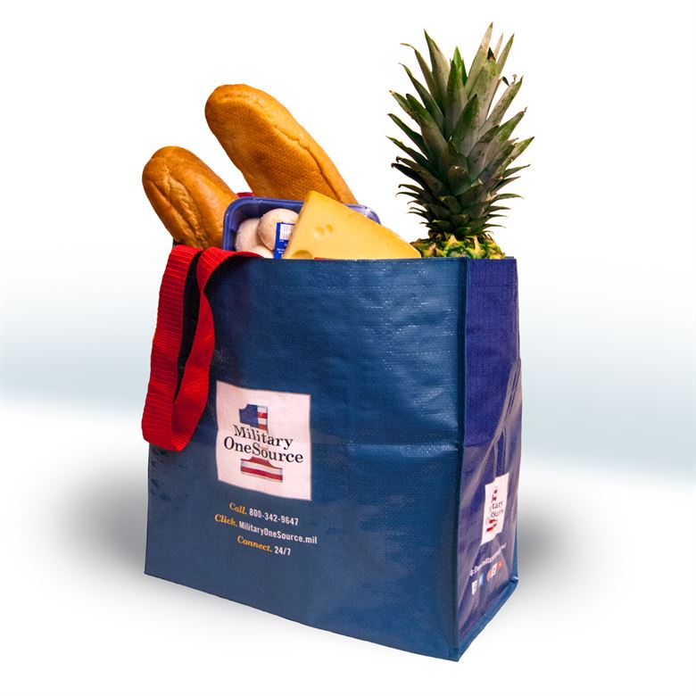

GREAT JOB! You can also reuse bags for your groceries and other purchases.

Plastic bags are not biodegardabe. They accumulate, pollute, and become a piece of trash in the environment.
Reusable bags are more durable, less expensive (in the long run), and can be recycled.